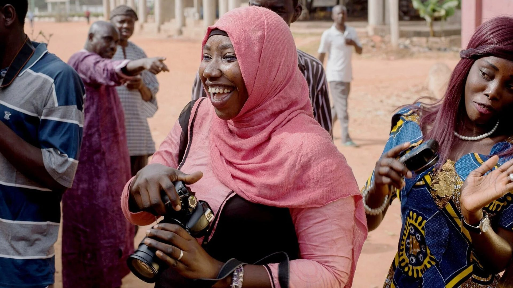
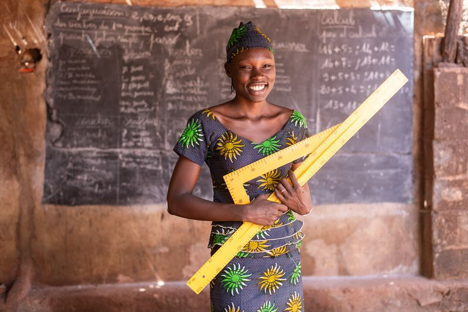
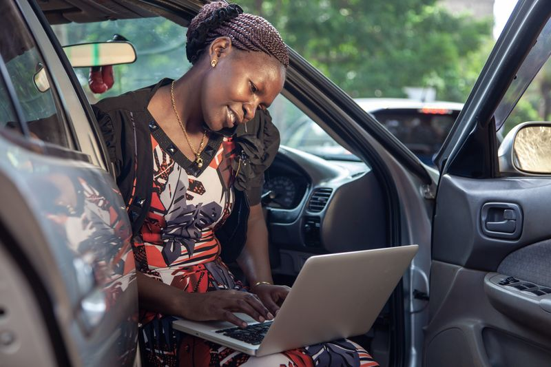

Africa Reframed is built for collaboration across sectors, between Europe and Africa.
A company, an NGO, a development fund, an embassy and a university each work with Africa in their own way and speak to their own audience. A photograph is something they can share: one collection can serve all of them, each for its own reason.
We make the pictures, the collections and the exhibitions that partners meet around. What they build from there is theirs.
The work has been made across sectors from the start: with a ministry, foundations, a broadcaster, a trade union agency and an arts centre.
Our work has been supported by
The same eight as on About, in About’s order. Each cell shows what the organisation supported when pointed at or tapped: draft lines, for Thomas. The logos are each organisation’s own, taken from its website on 10 November 2026; shown this large, each needs its courtesy note and its official one-colour file before launch.

Photography workshop in Banjul, The Gambia, in collaboration with Gambia Media Support and the Gambia Press Union Photo: Africa Reframed
A document, not an archive photograph: no AR ID. To add: the original file (this one is 2,000 px wide and soft on sharp screens), and the year if Thomas confirms it. Its people are not named.
Ways to take part
There are two ways into the archive, and a third beside it.
Use it, and the pictures reach your audience. Build it, and a new collection exists for every partner. Or make something with us, shaped around what you have in mind.
By sharing
Use it
By sharing
Use it
NGOs, media, educational and public institutions use the images in their own reports, campaigns and classrooms.
By production
Build it
By production
Build it
A company or another partner makes a new collection possible and is named on it. Every partner can then use it.
Beside the archive, we make workshops, exhibitions and other projects with partners.
Use it
Take the pictures into your own work, and they reach an audience we could not reach alone.
The archive holds photographs of contemporary African life: people learning, working, living connected lives in modern cities and making culture. Partners put them in reports, campaigns, classrooms and the press.

AR-1350 · Bamako, Mali Photo: Africa Reframed

AR-1137 · Nairobi, Kenya Photo: Africa Reframed

AR-1628 · Banjul, The Gambia Photo: Africa Reframed
Who it is for
NGOs, media, educational institutions, embassies, ministries and development finance institutions. For them the archive is free, and each organisation is approved by name.
What you find
1,122 photographs from Bamako, Nairobi and Banjul, in five themes. Every image has its keywords, its place and a number of its own, and comes at full size.
What a use does
Each download is a licence for one stated use, so the pictures can be followed out into the world. What partners use, and what they look for and do not find, guides what we photograph next.
How to start
Tell us who you are and how you will use the images. We read every request ourselves and answer within a working day.
Request accessWhat the licence covers →
A company comes in by building a collection.
Build it
A partner makes a new collection possible, and it becomes part of an archive that many organisations use.
What partners use and ask for shows what to build next. A collection is a body of new photographs on one theme, made on location, with the stories of the people in it.
It starts with a theme
One close to the partner’s work, or one it wants to support: a sector, a skill, a city, a change under way. Never the partner’s own operations.
Made where it happens
We find the people and places that show the theme and work with photographers from the countries concerned. Every photographer is credited and paid.
The partner’s name on it
The partner is named on the collection wherever it is shown. What the images show stays with us: name and stage, never editorial control.
Shared by everyone
The collection joins the archive, where every partner can use it. The partner, the people in the pictures and other organisations each tell their part with the same images.
One example of such work is the BESTSELLER FOUNDATION Waste to Value Collection, made for the foundation and the seven companies it shows.
See the Waste to Value Collection →
Talk to us about a collection
Make something with us
A workshop, an exhibition, a project across sectors: some things are shaped case by case.
Beside the archive, we make things together with partners: a school, a union, a venue, an organisation with something to show. Each starts with what the partner has in mind.
Workshops
On visual storytelling and the market for photographs, built with photography schools, photographers’ unions and press associations: in Bamako, Freetown, Nairobi and Banjul so far.
Exhibitions
Africa Reframed at Øksnehallen in Copenhagen, 2016: 5,000 square metres and more than 300 works, produced with DGI-byen and supported by Danida and Augustinus Fonden.
Across sectors
A project can gather several partners around one theme: a company, an organisation on the ground, an institution that hosts. Each brings its part, and each tells the story to its own audience.
Your own idea
Tell us what you have in mind. A few lines are enough to start.
The workshops, on About The exhibition, on About
Tell us what you have in mind
How we work
Behind every image and every collaboration.
- Real images
Every photograph is made by a photographer on location. Our images are never AI-generated, and what they show is never altered.
- Consent
The people in the images agreed to be photographed and to the uses the archive allows.
- Credited, fairly paid photographers
The photographers are paid for their work, and every image carries its credit line.
- Editorial independence
Sponsors get name and stage, never editorial control over what the images show.